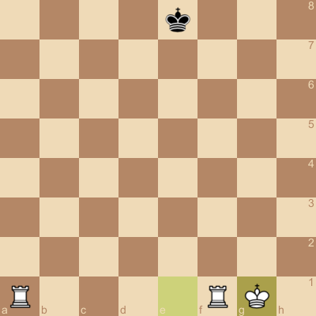

Making Moves¶
ChessBot makes use of Long Algebraic Notation (LAN), which is basically referencing the grid directly.
Ranks are indicated by number (1-8) and files are indicated by lettter (a-h)
In order to make a move, mention @chessbot and give a LAN grid move:
@chessbot d2d4

Castling¶
Consider the following simplified board:

We can do a king-side castle by moving the king at e1 to g1:
@chessbot e1g1

Queen-side castle would be similar:
@chessbot e1c1
Piece Promotion¶
ChessBot supports minor piece promotion. Suppose we have a simplified board setup where we want to promote the white pawn.

We can promote the white pawn to a queen by issuing the following move command:
@chessbot c7c8q

Promotion List¶
| letter notation | example | result |
|---|---|---|
| q | c7c8q | Promote to Queen |
| n | c7c8n | Promote to Knight (Under-promotion) |
| r | c7c8r | Promote to Rook (Under-promotion) |
| b | c7c8b | Promote to Bishop (Under-promotion) |
Images created by cjsaylor/chessimage